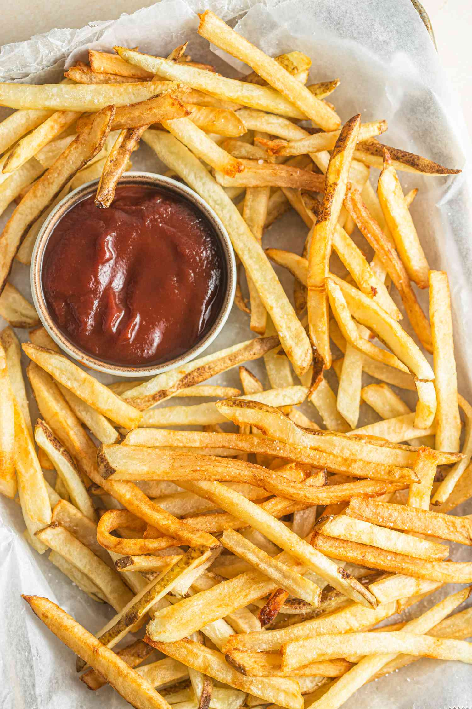

French Fries Recipe

An American classic, despite what the name will
have you think!
Be careful not to eat too many, and be sure to buy some
ketchup to properly enjoy these crispy, salty fries!
Ingredients
- 2.5 lbs. Russet potatoes
- 2 tablespoons distilled vinegar
- 1 quart peanut oil
- Kosher salt
Steps
- Prep the potatoes
- Rinse the fries
- Soak the fries
- Drain the potatoes and arrange on baking sheet
- Fry the potatoes
- Drain the potatoes...again
- Fry the potatoes
- Enjoy!